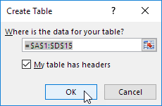

Dasar - dasar
Bagian ini menjelaskan dasar - dasar Excel.
Ribbon
Tab | Grup | Gunakan Ribbon | Tutup Ribbon
Excel memilih Beranda Tab Ribbon saat Anda membuka Excel. Pelajari cara menggunakan Ribbon.
Tab
Tab pada Ribbon adalah: File, Home, Insert, Page layout, Formulas, Data, Review, View dan Help. Tab Beranda berisi perintah yang paling sering digunakan di Excel.
Grup
Setiap tab berisi grup perintah terkait. Misalnya, tab Tata Letak Halaman berisi grup Tema, grup Penyetelan Halaman, dll.
Gunakan Ribbon
Mari kita gunakan Ribbon untuk menyisipkan tabel. Tabel memungkinkan Anda menganalisis data di Excel dengan cepat dan mudah.
- Klik salah satu sel di dalam kumpulan data.
-
Pada tab Sisipkan, dalam grup Tabel, klik Tabel.
-
Excel secara otomatis memilih data untuk Anda. Centang 'Tabel saya memiliki header' dan klik OK.

Hasil. Excel membuat tabel yang diformat dengan baik untuk Anda.
Catatan: gunakan panah tarik-turun untuk mengurutkan dan memfilter dengan cepat. Kunjungi bab kami tentang tabel untuk mempelajari lebih lanjut tentang topik ini.
Tutup Ribbon (Collapse the Ribbon)
Anda dapat menciutkan Ribbon untuk mendapatkan ruang ekstra di layar. Klik kanan di mana saja pada Ribbon, lalu klik Tutup Ribbon (atau tekan Ctrl+F1).

Hasil.

Buku Kerja (Workbook)
Buka Buku Kerja yang sudah Ada | Tutup Buku Kerja | Buat Buku Kerja Baru | Matikan layar Mulai
Buku kerja adalah kata lain untuk file Excel Anda. Saat Anda memulai Excel, klik Buku kerja kosong untuk membuat buku kerja Excel dari awal.
Buka Buku Kerja yang sudah Ada
Untuk membuka buku kerja yang telah Anda buat sebelumnya, jalankan langkah-langkah berikut.
- Pada tab File, klik Buka.
-
Terbaru menampilkan daftar buku kerja yang baru saja Anda gunakan. Anda dapat dengan cepat membuka buku kerja dari sini.

- Klik Telusuri untuk membuka buku kerja yang tidak ada dalam daftar.
Tutup Buku Kerja
Untuk menutup buku kerja (dan Excel), klik kanan atas X. Jika Anda memiliki beberapa buku kerja yang terbuka, mengklik kanan atas X akan menutup buku kerja yang aktif.
Buat Buku Kerja Baru
Terkadang Anda ingin memulai dari awal lagi. Untuk membuat buku kerja baru, jalankan langkah-langkah berikut.
- Pada tab File, klik Baru.
-
Klik Buku kerja kosong.
Matikan layar Mulai
Saat Anda memulai Excel, ini menunjukkan layar mulai yang mencantumkan file dan templat Excel yang baru saja digunakan. Untuk melewati layar mulai dan selalu memulai dengan buku kerja kosong, jalankan langkah-langkah berikut.
- Pada tab File, klik Opsi.
-
Di bawah opsi Mulai, hapus centang 'Tampilkan layar Mulai saat aplikasi ini dimulai'.

- Klik Oke.